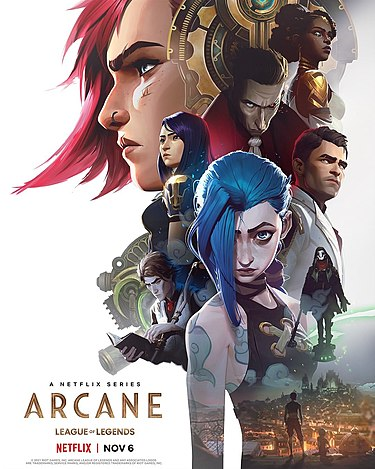

«Арке́йн» (Arcane: League of Legends) — мультсериал в жанре приключенческого фэнтези по вселенной игры League of Legends. Мультсериал был создан компанией Riot Games и французской студией Fortiche Production в честь десятилетия игры. Премьера первых трёх серий состоялась 6 ноября 2021 года на стриминговых платформах Netflix и Tencent Video. Сериал разделён на три «акта» по три серии; премьера второго и третьего актов состоялась 13 и 20 ноября соответственно. «Аркейн» был продлён на второй сезон. Действие происходит в вымышленных городах вселенной League of Legends Пилтовере и Зауне. Возрастной рейтинг мультсериала — «16+».
Сюжет мультсериала фокусируется на событиях, происходящих в двух городах — Пилтовере и Зауне. Оба города являются частью мира Рунтерра, хотя в остальном они имеют существенные различия. Напряженность между городами резко возросла с момента создания технологии Хекстек (Hextech) — с помощью которой каждый человек может управлять магической энергией. В Зауне новый препарат превращает людей в монстров. Соперничество, которое существует между этими двумя городами, послужило причиной вражды среди людей, которая иногда приводит к раздору между близкими людьми. Мультсериал рассказывает о взаимоотношениях персонажей, таких как Вай, Джинкс, Кейтлин, Джейс, Виктор, Экко, Синджед и Хеймердингер и других.